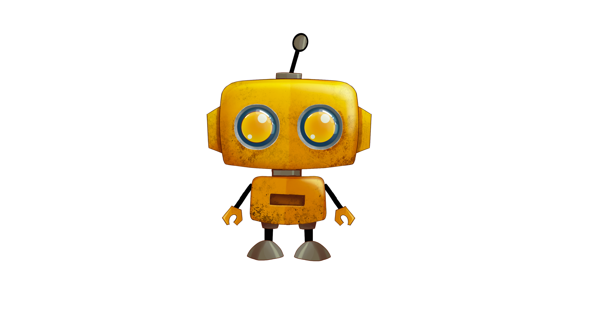
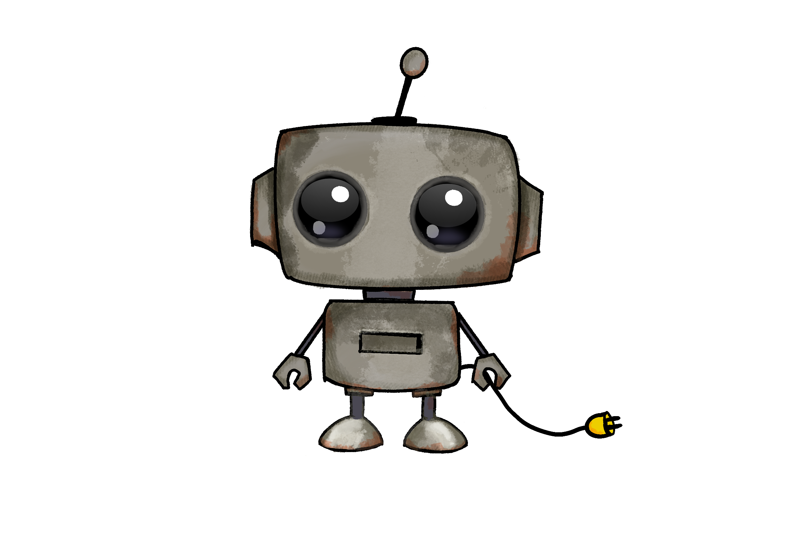

A brighter palette.
The same little character.
An existing gray robot, reworked in bright yellow with warm eyes and textured surfaces. A new color treatment gives the familiar character a more vivid presence.
- Project
- Robot · Character rework
- My focus
- Color, texture & Spine animation
- Starting point
- Supplied character artwork

A familiar character.
A new direction.
The starting artwork was a gray robot with dark, rounded eyes and a weathered surface. My rework introduces a bright yellow palette while keeping the character recognizable.
The oversized head, small body, and expressive eyes already gave the robot its personality. The changes focus on color and surface treatment, with the original character providing the starting point.
The original robot was supplied artwork. My contribution was the character’s visual rework, rather than its original design.
From muted gray
to bright yellow.
In the reworked version, saturated yellow replaces the muted gray body. Warm golden eyes and blue-gray rims introduce a stronger color contrast around the face.
The yellow surfaces retain a mottled texture, while brighter highlights give the head and eyes more definition. The result combines a vivid palette with visible surface detail.



Bringing the robot
to life.
I animated the finished yellow robot in Spine. This short loop shows the character moving beyond the still artwork, with its expressive eyes and compact silhouette carrying through into motion.
A new mood.
A familiar silhouette.
The final yellow version keeps the friendly presence of the supplied gray character while giving it a brighter appearance. The warm body color, golden eyes, and contrasting eye rims carry the visual change.
This project explores how much a character’s story can change through its finish, even when its underlying shape stays familiar.